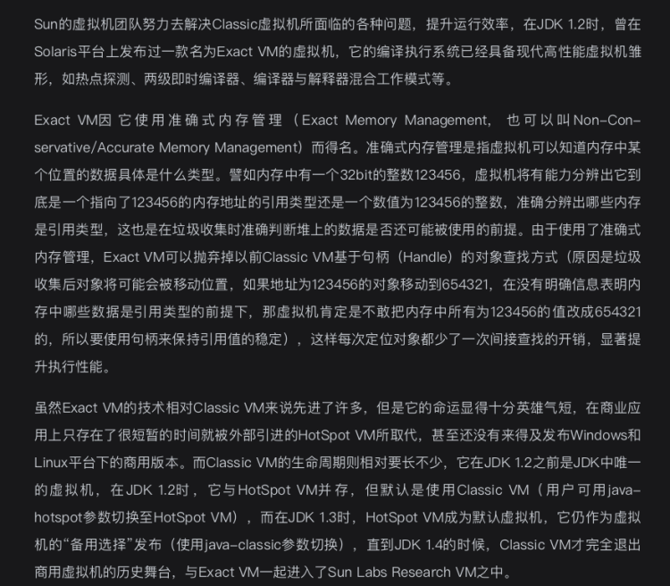

JVM历史
1. Sun Classic VM
这是世界上第一款商用Java虚拟机，在JDK1.2之前，用户java -version输出的都是Classic VM。 它只能用解释器来执行Java代码，如果想使用即时编译技术，必须使用外挂法，但是如果使用了即时编译技术，那解释器就停止工作。
-- 深入理解Java虚拟机
问题
由于是解释器和编译器不能共同工作，所以编译器的响应压力很大，不敢应用编译耗时稍高的优化，所以他的执行效率和传统c/c++有很大差距，也就是Java慢的由来。
2. Exact VM
出现的时间并不长，商业上仅出现了很短的时间就被HotSpot VM替代了。但是它的出现已经具备了很多高性能虚拟机雏形，如热点探针、编译器和解释器混合工作等。

3. HotSpot VM
使用最广的Java虚拟机，能找出最具编译价值的热点代码，通过即时编译器和解释器共同工作，可以在最优响应时间和最佳性能中取得平衡。同时取消了永久代。

4. BEA JRockit/IBM J9
5. Graal VM
历史惊人相似